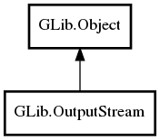

OutputStream
Object Hierarchy:

Description:
public abstract class OutputStream :
Object
Namespace: GLib
Package: gio-2.0
Content:
Creation methods:
Methods:
- public void clear_pending ()
- public abstract bool close (Cancellable? cancellable = null) throws IOError
- public virtual async bool close_async (int io_priority = DEFAULT, Cancellable? cancellable = null) throws IOError
- public virtual bool flush (Cancellable? cancellable = null) throws Error
- public virtual async bool flush_async (int io_priority = DEFAULT, Cancellable? cancellable = null) throws Error
- public bool has_pending ()
- public bool is_closed ()
- public bool is_closing ()
- public bool set_pending () throws Error
- public virtual ssize_t splice (InputStream source, OutputStreamSpliceFlags flags, Cancellable? cancellable = null) throws IOError
- public virtual async ssize_t splice_async (InputStream source, OutputStreamSpliceFlags flags, int io_priority = DEFAULT, Cancellable? cancellable = null) throws IOError
- public abstract ssize_t write (uint8[] buffer, Cancellable? cancellable = null) throws IOError
- public bool write_all (uint8[] buffer, out size_t bytes_written, Cancellable? cancellable = null) throws IOError
- public virtual async ssize_t write_async (uint8[] buffer, int io_priority = DEFAULT, Cancellable? cancellable = null) throws IOError
- public ssize_t write_bytes (Bytes bytes, Cancellable? cancellable = null) throws Error
- public async ssize_t write_bytes_async (Bytes bytes, int io_priority = DEFAULT, Cancellable? cancellable = null) throws Error